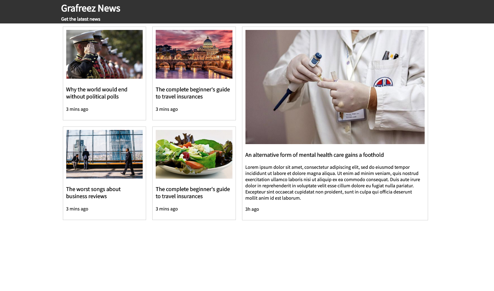

Week 6, Basic Layouts using CSS
Learning Outcomes
After this week you should be able to
- Describe the box model
- Describe how the browser paints the page
- Describe 'flex' model
06.01
Pre-class Reading
Read up to and including the 'display property' section
- https://developer.mozilla.org/en-US/docs/Learn/CSS/CSS_layout/Introduction
Class Slides
Group Activity / Lab
- Download
week-06/01/labs/week-06-01-lab.zipand implement the grid system template following<!-- commented instructions -->in theplanets.htmlfile - Post-class update: You can find David's solution:
- On GitHub pages: planets-inlineBlock.html
- In the class repo at
/schedule/week-06/01/labs/planets-inlineBlock.html
Post-class Reading
Review these HTML files in the week-06/01/ folder:
- Summary.html
- Flex-box.html
- View Meeting Recording — Access Passcode: 7j*0rV*B
06.02
Pre-class Reading
Group Activity / Lab
Implement the News Page from folder week-06/02/labs/

- Download news-page.zip and extract it on your PC's file system.
- Open the file
news-page-step-by-step-guide.htmlin VS Code and follow instructions to create your own file named[your netID]-news-page.htmland a CSS file linked from your HTMLhead/element. - Create a new folder in your personal GitHub repo and upload your new HTML and CSS files.
- Create a subfolder
imagesand upload the five .jpg image files you downloaded in thenews-page.zipfile. - View in GitHub Pages and work with your HTML and CSS until they resemble the
news-template.pngimage included in the package.
No Slides for This Class
Instead we'll work with this page and our prereading, then transition to lab work:
https://ist263-talley.github.io/fall-2020/schedule/week-06/02/labs/flexbox.html
Project Deliverable: Wireframes
These are the project blueprints. You will use these as guides to implement the web pages. There are vast number of tools you can use to create wireframes. We will talk more about wireframes during class starting around Week 4. If you need inspiration try the following sites:
Refer to the Individual Project page for background information.